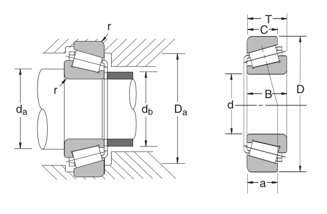

Original catalogue drawing - NSK catalogue, page 125

Scanned from the manufacturer catalogue page listing this part number. All part numbers printed on that table share the same drawing.
Scale cross-section
Blue = inner / outer ring, yellow = rolling element. Drawn to scale from this part's own
dimensions for selection reference only - not a manufacturing or assembly drawing.
Dimension table (mm / inch)
Symbol
Dimension
mm
inch
d
Bore diameter
22
0.8661
D
Outside diameter
50
1.9685
B
Inner-ring / bearing width
14
0.5512
T
Overall assembly width
15.25
0.6004
C
Cup / outer-ring width
12
0.4724
Notes
Weights are given in kg. Load ratings are shown in both the original catalogue units and the converted value (1 N = 0.2248 lbf). Data is provided for selection reference only - confirm against the latest official catalogue before ordering.
Main dimensions
Bore d (mm)
22
Bore d (in)
0.8661
Outside dia. D (mm)
50
Outside dia. D (in)
1.9685
Width B (mm)
14
Width B (in)
0.5512
Overall width T (mm)
15.25
Overall width T (in)
0.6004
Cup width C (mm)
12
Cup width C (in)
0.4724
Load ratings & speeds
Basic dynamic load rating Cr (lbs)
6110
Basic static load rating Cor (lbs)
6630
Limiting speed - grease (rpm)
7,500
Limiting speed - oil (rpm)
10,000
Weight
Weight (kg)
0.138
Mounting dimensions (fillets / shoulders)
Chamfer r (in)
0.039
Shaft shoulder da min (in)
1.221
Housing shoulder Da max (in)
1.734
Shaft shoulder db max (in)
1.143
Bearing life (ISO 281 basic rating life)
C / P
Equivalent load P (N)
L10 (106 rev)
L10h at 2,500 rpm
4
6,795
102
677
6
4,530
392
2,617
8
3,397
1,024
6,827
10
2,718
2,154
14,363
15
1,812
8,323
55,490
Basic rating life per ISO 281: L10 = (C/P)10/3 with C = 27,179 N. Hours = L10 x 106 / (60n). Life-modification factors for lubrication, contamination and temperature (aISO) are not included.
Source & traceability
Brand
NSK
Source catalogue
NSK inch product catalogue
Catalogue page
p.127 (dimensions) / p.128 (ratings)
Dimensions in inches and millimetres, load ratings in lbs.
Send us the quantity you need and we will come back with price and
lead time, normally within 24 hours. Equivalent parts from other brands can be quoted at the same time.